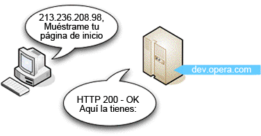
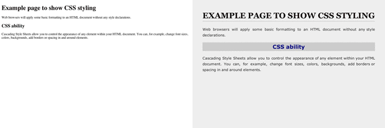

3. ¿Cómo funciona Internet?
Jonathan Lane. 8 de julio del 2008. Publicado en: dinámico, servidor, estático, web, HTTP
Muy de vez en cuando es posible conseguir ver los engranajes y las correas que actúan entre bastidores. Hoy es vuestro día de suerte. Os llevaré a dar una vuelta tras los telares de una de las tecnologías más interesantes que, posiblemente, ya conocéis bien: la web.
Este apartado trata sobre la tecnología subyacente que hace funcionar la web:
Lenguaje de etiquetado de hipertexto (HTML).
Protocolo de transferencia de hipertexto (HTTP).
Sistema de nombres de dominio (DNS).
Servidores web y navegadores web.
Contenido estático y dinámico.
Son materias bastante básicas y, aunque la mayor parte de lo que aquí se explica no os ayudará a construir una página web mejor, sí que os proporcionará el lenguaje adecuado para hablar con clientes y otras personas sobre Internet. Es como lo que una institutriz muy inteligente dijo una vez en Sonrisas y lágrimas: "Cuando leemos, empezamos por ABC. Cuando cantamos, empezamos por Do Re Mi". En este apartado describiremos brevemente cómo los ordenadores se comunican realmente utilizando HTTP y TCP/IP, y después nos fijaremos en los diferentes lenguajes que se combinan para crear las páginas web que conforman Internet.
Los contenidos de este apartado son los siguientes:
- 3.1. ¿Cómo se comunican los ordenadores a través de Internet?
- 3.2. Tipos de contenido
- 3.2.1. Texto normal
- 3.2.2. Estándares web
- 3.2.3. Páginas web dinámicas
- 3.2.4. Formatos que requieren otras aplicaciones o conectores
- 3.3. Páginas web estáticas o dinámicas
- Resumen
- Preguntas de repaso
- Lecturas complementarias
3.1. ¿Cómo se comunican los ordenadores a través de Internet?
Por suerte, hemos mantenido las cosas simples para los ordenadores. Cuando se trata de la web, la mayoría de las páginas están escritas utilizando el mismo lenguaje, el HTML, que pasa de un sitio a otro utilizando un protocolo común: HTTP (hypertext transfer protocol o protocolo de transferencia de hipertexto). El HTTP es el dialecto (especificación) común de Internet que permite, por ejemplo, que un equipo con Windows cante en armonía con un ordenador que ejecute la versión más reciente y más fantástica de Linux (¡Do Re Mi!). Mediante el uso de un navegador web un software especial que interpreta el HTTP y entrega el HTML en una manera legible para los humanos, las páginas web creadas con HTML y con cualquier tipo de ordenador se pueden leer en cualquier medio, incluyendo teléfonos, PDA e incluso en los sistemas de videojuegos más populares.
Aunque hablen el mismo lenguaje, los diferentes dispositivos que acceden a la web han de tener algunas normas establecidas para poder hablar entre ellos; es como aprender a alzar la mano para preguntar en clase. El HTTP establece estas normas básicas para Internet. Gracias al HTTP, un equipo cliente (como vuestro ordenador) sabe que debe ser él quien inicie una petición de una página web desde un servidor. Un servidor es un ordenador donde residen las páginas web; cuando escribís una dirección web en vuestro navegador, un servidor recibe la petición, encuentra la página web que deseáis y la envía a vuestro ordenador para que se vea en vuestro navegador.
3.1.1. Disección de un ciclo de solicitud-respuesta
Ahora que hemos visto todas las partes que permiten a los ordenadores comunicarse a través de Internet, trataremos con más detalle el ciclo de solicitud-respuesta de HTTP. A continuación, se presentan una serie de pasos numerados para que podáis trabajar siguiéndolos y, así, os podremos demostrar algunos conceptos de manera más eficaz:
Todas las solicitudes-respuestas empiezan cuando se escribe un URL (universal resource locator, localizador universal de recursos) en la barra de direcciones del navegador web, como http://dev.opera.com. Abrid un navegador para hacerlo ahora mismo.
Algo que quizá no sabéis es que los navegadores realmente no utilizan los URL para solicitar páginas web en los servidores; utilizan el Protocolo de Internet o direcciones IP (que son casi como números de teléfono o direcciones postales que identifican los servidores.) Por ejemplo, la dirección IP de http://dev.opera.com es 213.236.208.98.
Abrid una nueva pestaña o ventana del navegador, escribid http://www.apple.com y pulsad intro; a continuación, escribid http://17.149.160.10/ y pulsad intro: llegaréis al mismo sitio. Escribid http://213.236.208.98 en la barra de direcciones y pulsad intro: iréis a parar al mismo sitio que en el paso 1, pero obtendréis un error 403 "Acceso Denegado", esto es porque no tenéis permiso para acceder a la raíz real de este servidor.
http://www.apple.com actúa básicamente como un alias para http://17.149.160.10/, pero ¿por qué? ¿Y cómo? Ello se debe a que a las personas les resulta más fácil recordar palabras que largas cadenas de números. El sistema que realiza este trabajo se denomina Domain name system (DNS) o Sistema de nombres de dominio, que es esencialmente un directorio automático completo de todos los ordenadores conectados a Internet. Cuando escribís http://dev.opera.com en la barra de direcciones y apretáis intro, esta dirección se envía a un servidor de nombres que intenta asociarla a vuestra dirección IP. Hay muchos ordenadores conectados a Internet, y no todos los servidores DNS tienen un listado de cada ordenador que hay conectado, de manera que hay un sistema creado donde se puede dirigir la solicitud al servidor correcto para atenderla.
Así pues, el sistema DNS busca la página web www.opera.com, averigua que se encuentra en 17.149.160.10 y devuelve la dirección IP al navegador.
El ordenador envía una solicitud al ordenador de la dirección IP especificada y espera obtener una respuesta. Si todo va bien, el ordenador del servidor envía un breve mensaje de retorno al cliente que dice que todo es correcto (podéis ver la figura 1) seguido de la propia página web. Este tipo de mensaje está incluido en un encabezamiento HTTP.
Figura 1. En este caso todo es correcto y el servidor devuelve la página web correcta.
Si algo va mal, por ejemplo, si se escribe incorrectamente el URL, en su lugar se obtendrá un error HTTP: el famoso error 404 "no se encuentra la página" es el ejemplo más común que se puede encontrar.
Escribid http://dev.opera.com/joniscool.html: la página no existe, o sea que obtendréis un error 404. Probadlo con algunas páginas, en diferentes páginas web que no existan y os devolverán páginas diferentes. Esto se debe al hecho de que algunos desarrolladores web han dejado que el servidor web sólo emita la página de error predeterminada y otros han codificado páginas de error personalizadas para que aparezcan cuando se devuelve una página no existente. Se trata de una técnica avanzada que no trataremos en este curso, pero que afortunadamente se verá pronto en un artículo aparte en dev.opera.com.
Por último, una nota sobre los URL: generalmente el primer URL al que se accede en una página web no tiene un nombre de archivo real al final (por ejemplo, http://www.mysite.com/), y a continuación las páginas subsiguientes a veces tienen y a veces no. Siempre se accede a archivos reales, pero en ocasiones el desarrollador web ha configurado el servidor web para que no muestre los nombres de archivo en el URL; esto a menudo permite conseguir URL más limpios y fáciles de recordar, que conducen a una mejor experiencia para el usuario de vuestra página web.
3.2. Tipos de contenido
Ahora que ya os hemos enseñado una solicitud-respuesta HTTP, queremos que os fijéis en los diferentes tipos de contenido que pueden encontrarse en Internet. Los hemos agrupado en 4 tipos: texto normal, estándares web, páginas web dinámicas y formatos que requieren otras aplicaciones o conectores.
3.2.1. Texto normal
Durante los primeros días de Internet, antes de que apareciera cualquier estándar web o conector, Internet era principalmente imágenes y texto normal, archivos con una extensión .txt o similar. Cuando se encuentra un texto normal en Internet, el navegador lo muestra tal como es, sin ningún tipo de proceso. Todavía pueden encontrarse ficheros de texto normal en páginas web universitarias.
3.2.2. Estándares web
Las herramientas de construcción básicas de la web son los tres principales estándares web: HTML (o XHTML, aquí utilizaremos ambos indistintamente para nuestras finalidades), CSS y JavaScript:
Lenguaje de marcado de hipertexto (HTML), es un nombre realmente bueno con respecto a la definición de su objetivo. El HTML se utiliza para dividir un documento, especificar sus contenidos y su estructura, y definir el significado de cada parte (es lo que incluye todo el texto, etc., que se ve en las páginas web). Utiliza elementos para identificar los diferentes componentes de una página.
Las hojas de estilo en cascada (CSS) dan un control total sobre cómo se visualiza un elemento.
Cambios de formato
Utilizando declaraciones de estilo es muy sencillo cambiar todos los párrafos para que queden a doble espacio:
line-height: 2em;O hacer que todos los encabezamientos de segundo nivel sean verdes:
color: green;[/courier-new]Existen muchas ventajas para separar la estructura del formato y lo veremos con más detalle en el siguiente apartado. Para demostrar la potencia de HTML y CSS utilizados de manera combinada, la figura 2 muestra a la izquierda HTML normal, sin ningún formato añadido, mientras que a la derecha puede verse exactamente el mismo HTML con algunos estilos de CSS aplicados.
Figura 2. HTML normal a la izquierda, HTML con CSS aplicado a la derecha.
Por último, el lenguaje JavaScript aporta funciones dinámicas a las páginas web. Se pueden escribir pequeños programas en JavaScript que se ejecutarán en el ordenador cliente y que no requieren que haya ningún software especial instalado en el servidor. JavaScript permite añadir algunas funciones básicas e interactividad a las páginas web, pero tiene sus limitaciones, lo que nos lleva a hablar de lenguajes de programación del lado del servidor y a páginas web dinámicas.
3.2.3. Páginas web dinámicas
En ocasiones, cuando naveguéis por Internet os encontraréis páginas web que no tienen una extensión .html: es posible que tengan una extensión .php. asp, .aspx, .jsp, u otras extensiones extrañas. Todos son ejemplos de tecnologías web dinámicas que se pueden utilizar para crear páginas web que tengan secciones dinámicas: código que muestra diferentes resultados según los valores que reciba, por ejemplo, de una base de datos, de un formulario o de otra fuente de datos. Trataremos estos tipos de páginas web en el subapartado "Páginas web estáticas o dinámicas", a continuación.
3.2.4. Formatos que requieren otras aplicaciones o conectores
Como los navegadores web sólo están equipados para interpretar y mostrar determinadas tecnologías como estándares web, si solicitáis un URL que apunta a un formato de archivo complejo o a una página web que contiene una tecnología que requiere conectores (plugins), se descargará en vuestro ordenador o se abrirá utilizando el conector necesario si el navegador lo tiene instalado.
Ejemplos de conectores
Si os encontráis un documento de Word, de Excel, PDF, un fichero comprimido (por ejemplo, ZIP o SIT), un fichero de imágenes complejas como Photoshop PSD, u otro fichero complejo que el navegador no comprende, generalmente el navegador os preguntará si deseáis descargar o abrir el fichero. Ambas acciones normalmente tienen resultados similares, excepto que la última hará que el fichero se descargue y a continuación se abra con una aplicación que lo comprende, si está instalada.
Si os encontráis una página que contenga una película Flash, MP3 u otro formato de música, MPEG u otro formato de vídeo, el navegador lo reproducirá utilizando un conector, si hay uno instalado. En caso contrario, se proporcionará un enlace para instalar el conector necesario, o el archivo se descargará y buscará una aplicación de escritorio para ejecutarlo.
Naturalmente, hay algunas áreas grises: por ejemplo, SVG (scalable vector graphics, gráficos vectoriales escalables) es un estándar web que se ejecuta de manera nativa en algunos navegadores, como Opera, pero no en otros, como Internet Explorer. El IE necesita un conector para comprender los SVG. Hay una serie de navegadores que incluyen algunos conectores previamente instalados, de modo que es posible que no seáis conscientes de que el contenido se está visualizando mediante un conector y de manera no nativa en el navegador.
3.3. Páginas web estáticas o dinámicas
Así pues, ¿qué son las páginas web estáticas y dinámicas y cuál es la diferencia entre ambas? Como en una caja de bombones, todo se basa en el relleno.
Una página web estática es una página web donde el contenido, el HTML y los gráficos, son siempre estáticos se sirve a cualquier visitante de la misma manera, a no ser que la persona que ha creado la web decida cambiar manualmente su copia en el servidor, exactamente lo que hemos estado repasando en la mayor parte de este apartado.
Por el contrario, en una página web dinámica, el contenido del servidor es el mismo, pero en vez de ser sólo HTML, también contiene código dinámico, que puede mostrar datos diferentes según la información que suministre a la página web.
Página web dinámica
Podéis ver un ejemplo de página web dinámica: id a Amazon con vuestro navegador web y buscad cinco productos diferentes. Amazon no os ha enviado cinco páginas diferentes, os ha enviado la misma página cinco veces, pero con diferente información dinámica completada cada vez. Esta información diferente se guarda en una base de datos, que entrega la información correspondiente cuando se solicita, y la envía al servidor web para insertarla en la página dinámica.
Otra cosa que cabe tener en cuenta es que se debe instalar un software especial en el servidor para crear una página web dinámica. Mientras que los ficheros HTML estáticos normales se guardan con una extensión de fichero .html, estos ficheros contienen código dinámico especial además del HTML y se guardan con extensiones de archivo especiales para indicarle al servidor web que necesitan un procesado adicional antes de enviarlos al cliente (como, por ejemplo, que se inserten los datos desde la base de datos); los archivos PHP, por ejemplo, generalmente tienen una extensión de archivo .php.
Hay muchos lenguajes dinámicos que se pueden elegir: el PHP que hemos mencionado antes y otros como Python, Ruby on Rails, ASP.NET y Coldfusion. En definitiva, todos estos lenguajes tienen más o menos las mismas capacidades, como hablar con bases de datos, validar la información introducida en los formularios, etc., pero hacen las cosas de manera ligeramente diferente y tienen algunas ventajas e inconvenientes. Todo se reduce a la forma más sencilla que mejor se adapte.
Resumen
Hasta aquí el recorrido por la sala de máquinas de Internet. Este apartado realmente sólo trata de pasada muchos de los temas que incluye, pero resulta útil porque los pone en perspectiva entre ellos y muestra cómo se relacionan y funcionan entre sí. Todavía queda mucho por aprender sobre la sintaxis real del lenguaje que conforma el HTML, el CSS y JavaScript, y esto es lo que haremos a continuación: el apartado siguiente se centra en el modelo de estándares web HTML, CSS y JavaScript de desarrollo web, y da un vistazo al código de la página web.
Preguntas de repaso
Realizad una breve descripción de HTML y HTTP y explicad la diferencia entre los dos.
Explicad la función de un navegador web.
Navegad por Internet durante 5-10 minutos e intentad encontrar algunos tipos diferentes de contenidos: texto normal, imágenes, HTML, páginas dinámicas como páginas PHP y .NET (.aspx), PDF, documentos de Word, películas Flash, etc. Acceded a algunos de estos contenidos y pensad cómo os los muestra el ordenador.
¿Cuál es la diferencia entre una página estática y una página dinámica?
Encontrad una lista de códigos de error HTTP, enumerad cinco y explicad qué significa cada uno de ellos.
Lecturas complementarias
En este curso ya no volveremos a hablar de los lenguajes dinámicos, pero hemos creado una lista de recursos en caso de que queráis leéroslos:
Rails: Fernandez, Obie. (2007). The Rails Way. Addison-Wesley Professional Ruby Series.
PHP: Powers, David (2006). PHP Solutions: Dynamic web development made easy, friends of ED.
ASP.NET: Lorenz, Patrick. (2003). ASP.NET 2.0 Revealed. Apress.
ASP.NET: documentación y guías en línea de ASP.NET